Storyboard · Le marché d’Aïcha
Le marché d’Aïcha
Chaque plan du module, branches interactives comprises : images tirées de l’animation, direction visuelle, narration, textes à l’écran et interactions. Livrable 1, à valider avec les experts de l’ARAA.
Carte des embranchements
| Plan | Segment | Images | Direction visuelle (anglais) | Narration et sous-titres | Textes à l’écran |
|---|---|---|---|---|---|
| 1 | title 7s Version linéaire (WhatsApp) |
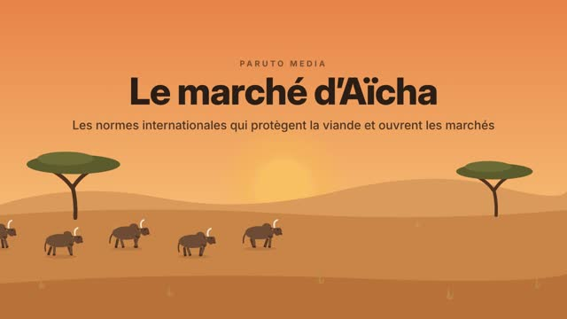 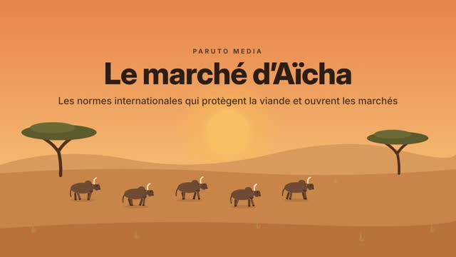 |
Dawn over the Sahel: sky gradient from #E7834A at the top to #F9D59C at the horizon, a large soft sun rising slowly, two flat acacia trees in dark olive silhouette, and five small dark-brown zebu cattle walking left to right along the horizon in a slow loop. From 0.8 s the title fades and slides up into the upper third: a small letter-spaced kicker "PARUTO MEDIA", the title "Aïcha’s Market" (very large, extra bold, #2B1E16) and the subtitle "The international standards that keep meat safe and open markets" beneath it. | 0:01.2 Le marché d’Aïcha : les normes internationales qui protègent la viande. | — |
| 2 | meet 11.6s Version linéaire (WhatsApp) |
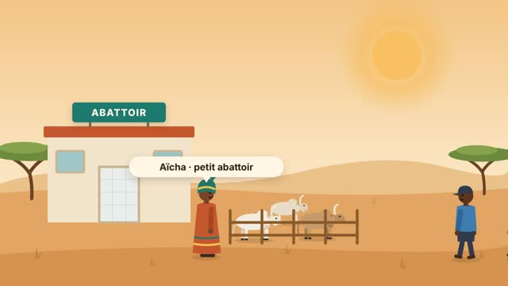 |
Daytime savanna: warm sky (#F2C584 to #FCEFD8), sand hills (#E9C189), ochre ground (#E2A564). On the left a small cream abattoir building with a terracotta roof, two windows, an open door showing white tiles, and a teal sign on the roof reading "ABATTOIR". Beside it a wooden pen with three zebu cattle. Aïcha walks out and stops right of the building: a West African woman in a long terracotta wrapper dress with yellow and teal bands and a teal headwrap. From 2.6 s two buyers in city clothes walk in from the right and stop facing her (one in a blue shirt and dark cap, one in a cream shirt). At 1.6 s a cream name tag pops above Aïcha: "Aïcha · small abattoir". At 5.8 s a teal pill above the buyers: "City buyers"; at 7.2 s a cream speech bubble above it in terracotta text: "Is the meat safe?". Everything gently idles. | 0:07.4 Aïcha dirige un petit abattoir. Des acheteurs d’une grande ville côtière veulent sa viande. 0:13.9 Mais ils demandent une garantie : cette viande est-elle saine ? |
— |
| 3 | why 24s Version linéaire (WhatsApp) |
 |
Diagram on a cream board (#FBF1DF) with a fine dot pattern, no logos. Two rounded sand-coloured countries side by side, split by a dashed vertical border in the middle. Two invented flags tell the countries apart: Aïcha's is teal over gold with a small terracotta disc; the buyers' is split diagonally indigo and sand with a small cream dot. Never use a real flag. The left country holds Aïcha's small abattoir (cream building, terracotta roof, teal sign "ABATTOIR") and its flag; the right one holds a small city skyline and its flag. From 1.2 s a white meat crate (teal band, oval stamp) slides from the abattoir to the border and stops. From 7.8 s four different rule cards pop in one by one around the border (white cards with coloured top bands: pale blue, tan, pale green, pink), each showing a big terracotta "?" or "!", and the crate jitters, stuck. At 15.6 s the cards fly together and vanish into one large cream card with a blue globe icon and "WTO" in bold indigo. From 18.6 s the crate slides across the border into the city; a green check pops at 21.8 s. | 0:18.9 La ville se trouve dans un pays voisin, qui fixe ses propres règles sanitaires pour la viande qui entre. 0:26.2 Si chaque pays inventait ses propres règles, chaque frontière exigerait autre chose. 0:33.6 C’est pourquoi les pays se sont accordés sur des principes communs, à l’Organisation mondiale du commerce. |
— |
| 4 | right 14s Version linéaire (WhatsApp) |
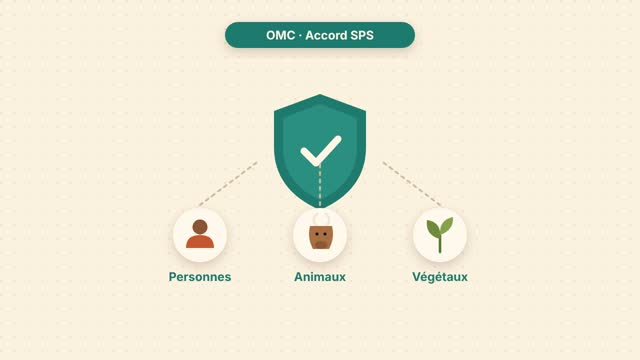 |
Diagram on a cream board (#FBF1DF) with a fine dot pattern, no logos. At 0.4 s a teal pill at the top: "WTO · SPS Agreement". At 1 s a large teal shield with a cream check mark grows in the centre. Three round cream badges pop in a row below it, joined to the shield by dotted lines, each with a teal label: at 6.2 s a person's bust "People", at 8.4 s a cow's head "Animals", at 10.6 s a green seedling "Plants". | 0:42.9 L’Accord SPS de l’OMC commence par un droit : 0:48.0 chaque pays peut protéger la vie et la santé des personnes, des animaux et des végétaux. |
— |
| 5 | limits 26s Version linéaire (WhatsApp) |
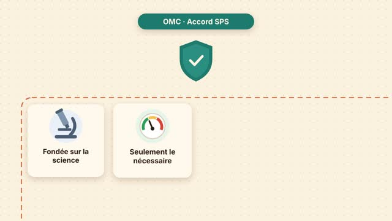 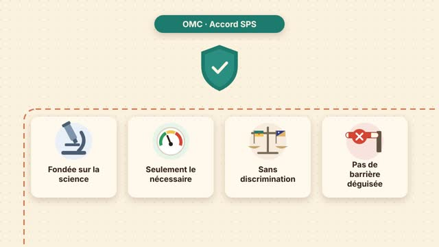 |
Continuing on the same board. The three badges fade and the shield shrinks and rises under the pill. A dashed terracotta rounded frame appears around the lower half of the frame (the limits). Four cream cards pop into it in a row, each with a pastel circle, an icon and a bold label: at 0.6 s a microscope "Based on science"; at 7.6 s a small gauge with its needle in the green "Only what is needed"; at 13.4 s a balance carrying both invented flags at the same height "No discrimination"; at 20 s a striped barrier crossed out with a red circle "No hidden barrier". | 0:56.9 Mais ce droit a des limites. Une mesure doit reposer sur des principes et des preuves scientifiques. 1:04.0 Elle ne s’applique que dans la mesure nécessaire pour protéger la santé. 1:09.8 Elle ne doit pas faire de discrimination entre des pays où les mêmes conditions existent. 1:16.4 Et elle ne doit jamais servir de barrière déguisée au commerce. |
— |
| 6 | risk 24s Version linéaire (WhatsApp) |
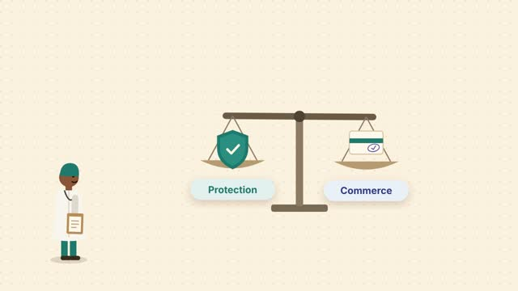 |
Diagram on a cream board (#FBF1DF) with a fine dot pattern, no logos. On the left the official veterinarian (white coat, teal cap, stethoscope, clipboard) stands and watches. At 0.5 s a teal pill "Risk assessment" appears at the top, and below it a large semicircular gauge (green, yellow, red) whose needle swings back and forth, then settles in the green at about 9 s. At 8.2 s, 10.6 s and 13 s three cream cards pop in a row, each with a pastel circle, an icon and a label: a microscope "Scientific evidence"; a cow beside a small farm building "Farming and processing"; a red virus "Diseases present". A magnifying glass moves over each card in turn. At 15.4 s the gauge and cards fade and a large brown balance scale appears: on the left pan a small teal shield with a pill "Protection", on the right pan a meat crate with a pill "Trade". The beam tips one way, then the other, and comes level at about 19.6 s; a green check pops above it at 20.4 s. | 1:22.9 Pour choisir une mesure, un pays évalue d’abord le risque, avec les méthodes des organisations internationales. 1:30.4 Il tient compte des preuves scientifiques, des méthodes d’élevage et de transformation, et des maladies présentes. 1:38.2 Puis il choisit une mesure qui protège assez, sans restreindre le commerce plus que nécessaire. |
— |
| 7 | standards 17.6s Version linéaire (WhatsApp) |
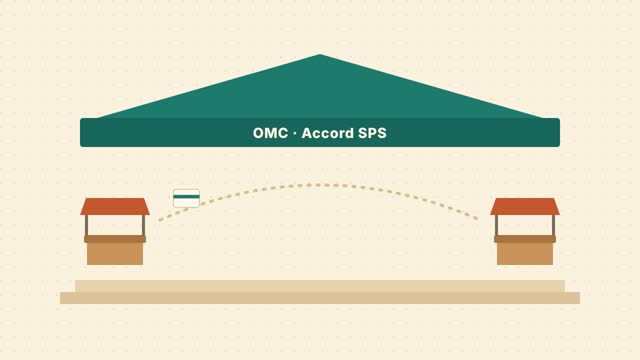 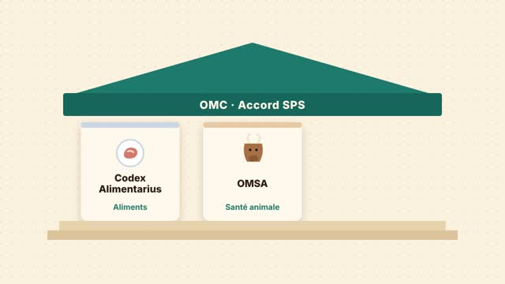 |
Diagram on a cream board (#FBF1DF) with a fine dot pattern, no logos. At 0.4 s a teal temple roof (pediment and architrave, #1F7A6E) pops in with "WTO · SPS Agreement" in white on the architrave, and a stone base appears below. Under the roof, two small market stalls (terracotta awnings) with a dashed arc between them and a small cream crate travelling along it, looping, until 8.4 s when they fade. Then three cream pillars rise under the roof, one by one at 9.4 s, 11.9 s and 14.2 s, each with a coloured top band, a round icon, a bold name and a teal subtitle: "Codex Alimentarius" with a plate of meat, "Food"; "WOAH" with a cow's head, "Animal health"; "IPPC" with a green leafy seedling, "Plants". | 1:46.9 Pour rapprocher les règles, l’Accord demande de fonder les mesures sur les normes internationales. 1:54.0 Trois organisations les élaborent : le Codex Alimentarius pour les aliments, l’OMSA pour la santé animale et la CIPV pour les végétaux. |
— |
| 8 | harmonize 18s Version linéaire (WhatsApp) |
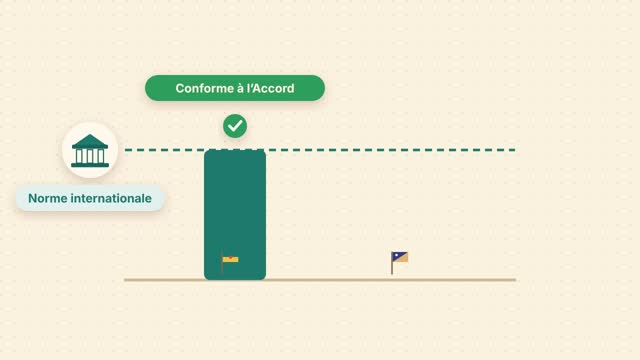 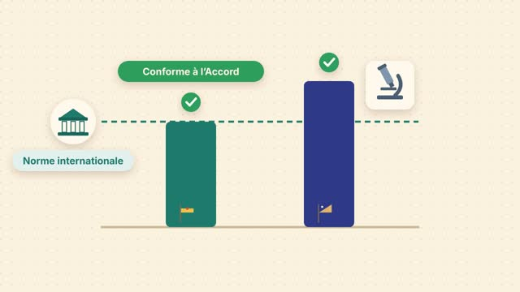 |
Diagram on a cream board (#FBF1DF) with a fine dot pattern, no logos. A light baseline across the lower frame and a dashed teal horizontal line at mid height: the international standard, marked on the left by a round badge with a small teal temple (pediment, three columns) and a pale-teal pill "International standard" under it. From 0.9 s a teal bar topped by Aïcha's flag at its foot grows up to exactly the dashed line; a green check pops above it at 3 s and a green pill "In line with the Agreement" at 3.8 s. From 8.8 s an indigo bar with the buyers' flag grows higher than the line; a yellow "?" pops above it at 11.2 s. At 12.4 s a cream card with a microscope flies in from the right and settles beside it; at 14 s the "?" becomes a green check and an indigo pill appears at the top: "Stricter: backed by science". | 2:04.5 Une mesure conforme à ces normes est présumée nécessaire et conforme à l’Accord. 2:12.6 Un pays peut protéger plus strictement que la norme, mais il lui faut une justification scientifique. |
— |
| 9 | choice1 11s (pause) Version linéaire (WhatsApp) |
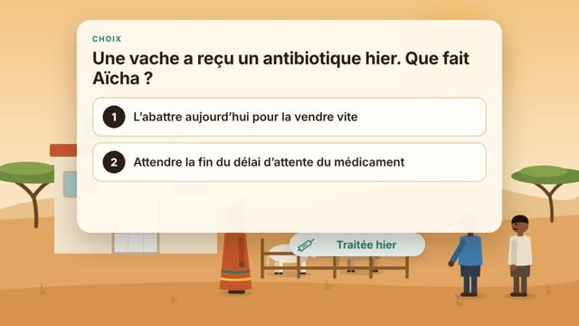 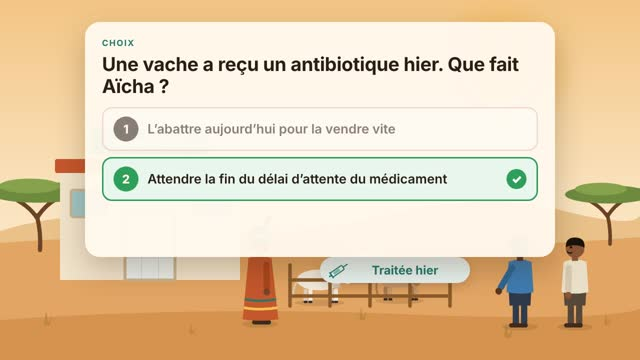 |
Aïcha's abattoir scene again, idle, with the buyers standing on the right. A pale-teal pill with a syringe icon sits over the cattle in the pen: "Treated yesterday". A large cream card (rounded corners, soft shadow) slides down into the upper part of the frame. Small teal uppercase label "Choice", the question in large bold text, then two option rows with numbered dark circles 1 and 2 (texts below). From 1.4 s to 4.4 s show the line "Pause the video and choose: 1 or 2?" with a 3, 2, 1 countdown in an orange ring. At 4.6 s option 2 turns green with a white check mark in a green circle; option 1 dims to half opacity. | 2:22.5 Une vache a reçu un antibiotique hier. Que fait Aïcha ? 2:27.0 Réponse 2 : on respecte le délai d’attente pour éviter des résidus dans la viande. |
Une vache a reçu un antibiotique hier. Que fait Aïcha ? 1. L’abattre aujourd’hui pour la vendre vite 2. Attendre la fin du délai d’attente du médicament Interaction 1 → mauvaise réponse, blocked1 2 → bonne réponse, hygiene |
| 10 | blocked1 10s Version interactive seulement |
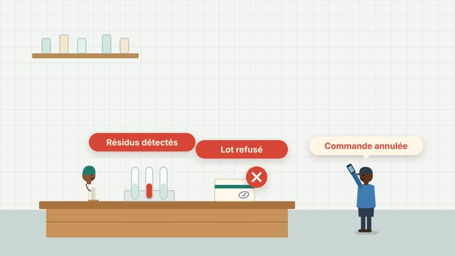 |
Branche : conséquence d’un mauvais choix, puis retour au choix. | +0.3s La viande contient encore des résidus du médicament. +4.2s Le contrôle les détecte : le lot est refusé et l’acheteur annule sa commande. |
— Interaction Branche : conséquence d’un mauvais choix, puis retour au choix. |
| 11 | hygiene 16.8s Version linéaire (WhatsApp) |
 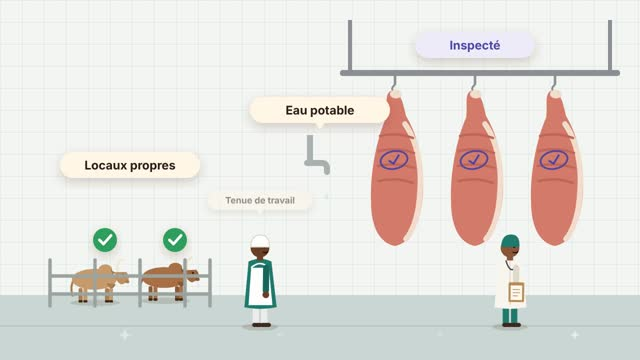 |
Inside the abattoir: walls of small white tiles, a pale grey-green floor. On the left a metal-railed pen with two zebu cattle; on the right a steel rail near the ceiling with three stylised carcasses hanging from hooks (simple rounded shapes in muted pink with cream fat edges and a few rib lines; clean and not gory). The official veterinarian (white coat, teal cap, stethoscope, clipboard) stands by the pen facing the cattle, arm raised as if examining; green check marks pop above each animal at 1.6 s and 2.9 s. From 4.8 s he walks to the carcasses and, at 6.4 s, 8.0 s and 9.6 s, raises his arm and a blue-violet oval inspection stamp with a check slams onto each carcass. At 9.9 s a pale-violet pill appears at the top: "Inspected". From 11 s: a cream pill "Clean premises" with small white sparkles twinkling on the floor; at 12.2 s a wall tap drips water and a pill "Clean water" appears; at 13 s a worker in a white apron, white cap and white boots appears with a pill "Work clothes". | 2:33.5 Avant l’abattage, le vétérinaire inspecte les animaux vivants. 2:38.0 Après l’abattage, il inspecte chaque carcasse et appose le cachet d’inspection. 2:43.8 Locaux propres, eau potable, tenues de travail : l’hygiène protège le consommateur. |
— |
| 12 | equiv 24s Version linéaire (WhatsApp) |
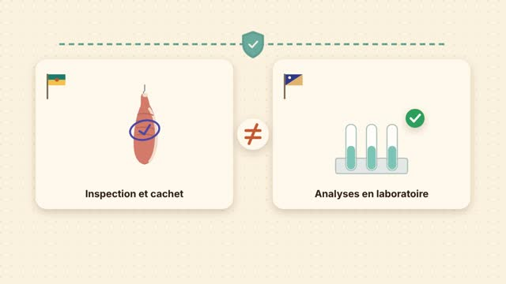 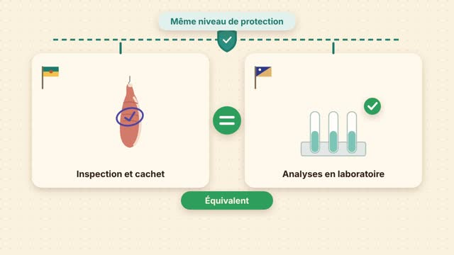 |
Diagram on a cream board (#FBF1DF) with a fine dot pattern, no logos. Two invented flags tell the countries apart: Aïcha's is teal over gold with a small terracotta disc; the buyers' is split diagonally indigo and sand with a small cream dot. Never use a real flag. Two large cream panels side by side, each with its flag in the top-left corner and a label at the bottom. Left panel (Aïcha's country): a hanging carcass, stylised and not gory; at 2.6 s a blue-violet oval inspection stamp with a check slams onto it; label "Inspection and stamp". Right panel (the buyers' country): a rack of three test tubes that fill with teal liquid from 3.6 s, then a green check; label "Laboratory tests". At 5.4 s a cream circle with a terracotta not-equal sign (≠) pops between the panels. At 7 s a dashed teal line with a small shield appears across the top, with a pale-teal pill "Same level of protection"; at 8.4 s and 9.2 s a short teal arrow grows from the top of each panel up to the line. At 15.6 s the ≠ turns into a green circle with a white equals sign, and at 16.6 s a green pill "Equivalent" appears below the panels. | 2:50.3 Le pays des acheteurs ne contrôle pas la viande exactement comme celui d’Aïcha. 2:56.8 Selon l’article 4, l’importateur doit accepter des mesures différentes comme équivalentes, 3:04.4 si le pays exportateur démontre objectivement qu’elles atteignent le niveau de protection de l’importateur. |
— |
| 13 | equiv2 24s Version linéaire (WhatsApp) |
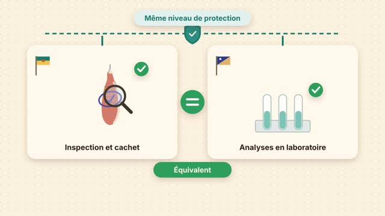 |
Continuing with both panels. From 0.6 s three white documents arc one after another from the left panel to the right one. From 4 s a magnifying glass travels from the right panel to the left one and hovers over the stamped carcass; a green check pops at 6.6 s. At 8.2 s a cream speech bubble with a terracotta "?" appears over the left panel; at 11.4 s a calendar showing "6" appears at the top right with a cream pill "Reply within 6 months". At 15.4 s these fade, the green pill below the panels fades, and a dashed road appears along the bottom; from 16 s a small refrigerated truck (white box with a teal snowflake, teal cab) drives steadily from left to right along it with a green pill "Trade goes on" riding above it. | 3:14.3 L’exportateur fournit les données scientifiques et techniques, et donne accès aux inspections et aux tests. 3:22.0 Sur demande, l’importateur explique le risque visé par sa mesure, et répond normalement dans les six mois. 3:29.8 Entre-temps, le commerce en cours continue : une demande n’est pas une raison de l’arrêter. |
— |
| 14 | zones 18s Version linéaire (WhatsApp) |
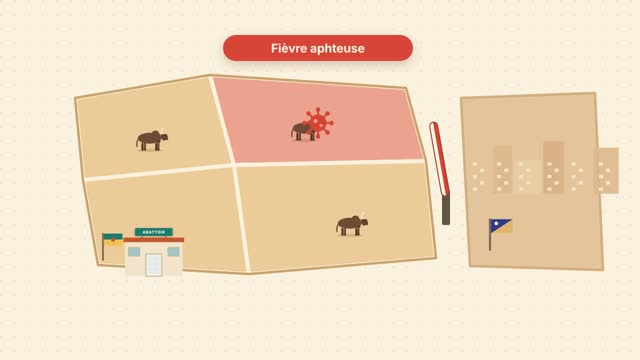 |
Diagram on a cream board (#FBF1DF) with a fine dot pattern, no logos. Two invented flags tell the countries apart: Aïcha's is teal over gold with a small terracotta disc; the buyers' is split diagonally indigo and sand with a small cream dot. Never use a real flag. A simple invented map: Aïcha's country divided into four sand-coloured regions by thin cream borders, with a small zebu in three of them, her abattoir and flag in the bottom-left region; on the right, separated by a border barrier (a striped pole, raised), the buyers' country with a small city skyline and its flag. At 2.6 s a red virus pops in the top-right region, which turns salmon red, and a red pill appears at the top: "Foot-and-mouth disease". From 8.6 s a red dashed outline pulses around the whole country and a cream speech bubble with a terracotta "?" pops over the buyers' country, both gone by 12.4 s. From 12.6 s each region's outline flashes teal in turn. | 3:38.3 Un matin, la fièvre aphteuse est signalée dans une région éloignée de celle d’Aïcha. 3:46.0 Tout le pays doit-il arrêter de vendre ? L’article 6 demande d’adapter les mesures à la situation sanitaire de chaque zone. |
— |
| 15 | choice3 11s (pause) Version linéaire (WhatsApp) |
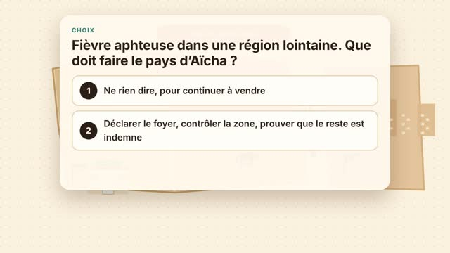 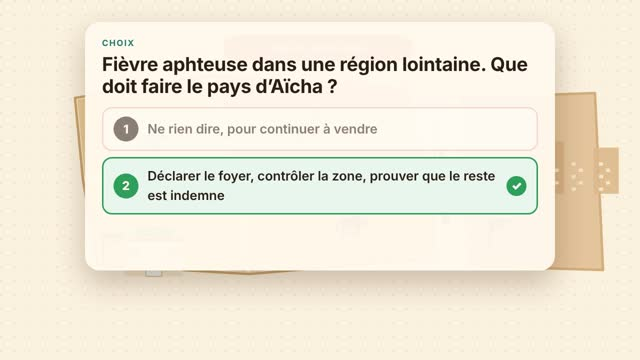 |
The map as at the end of the previous shot, still (the outbreak region red). A large cream card (rounded corners, soft shadow) slides down into the upper part of the frame. Small teal uppercase label "Choice", the question in large bold text, then two option rows with numbered dark circles 1 and 2 (texts below). From 1.4 s to 4.4 s show the line "Pause the video and choose: 1 or 2?" with a 3, 2, 1 countdown in an orange ring. At 4.6 s option 2 turns green with a white check mark in a green circle; option 1 dims to half opacity. | 3:56.3 Que doit faire le pays d’Aïcha ? 4:00.8 Réponse 2 : déclarer le foyer, contrôler la zone et prouver que les autres zones sont indemnes. |
Fièvre aphteuse dans une région lointaine. Que doit faire le pays d’Aïcha ? 1. Ne rien dire, pour continuer à vendre 2. Déclarer le foyer, contrôler la zone, prouver que le reste est indemne Interaction 1 → mauvaise réponse, blocked3 2 → bonne réponse, zonesGo |
| 16 | blocked3 10s Version interactive seulement |
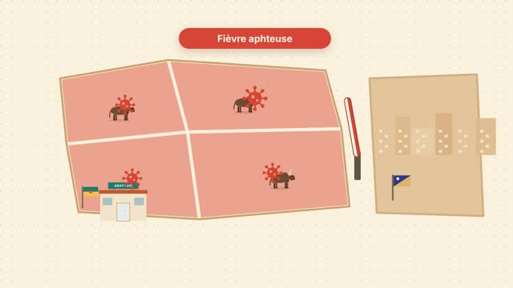 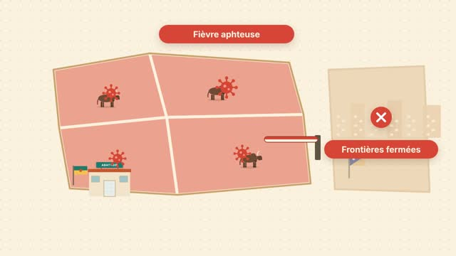 |
Branche : conséquence d’un mauvais choix, puis retour au choix. | +0.3s Cachée, la maladie gagne d’autres régions. +4.6s La confiance est perdue : les acheteurs ferment leurs portes à tout le pays. |
— Interaction Branche : conséquence d’un mauvais choix, puis retour au choix. |
| 17 | zonesGo 20s Version linéaire (WhatsApp) |
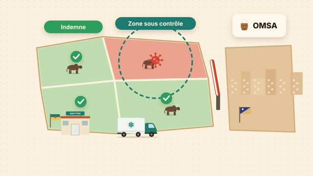 |
The same map. At 0.2 s a cream badge with a cow's head and "WOAH" appears at the top right, and an envelope flies to it from the red region. At 2.4 s a dashed teal circle closes around the red region and a teal pill replaces the red one at the top: "Zone under control". From 6.8 s a magnifying glass sweeps over the three other regions; each turns pale green with a green check (7.8 s, 9.1 s, 10.4 s), and a green pill "Disease-free" appears at the top left at 11 s. From 13.6 s a small refrigerated truck leaves the abattoir region and drives towards the border, which stays open; a green check pops over the buyers' country at 18.4 s. | 4:07.3 Le foyer est déclaré à l’OMSA et la zone est placée sous contrôle. 4:14.0 Grâce à la surveillance et aux contrôles, le pays prouve que les autres zones sont indemnes, 4:20.6 et les acheteurs peuvent continuer d’accepter la viande de ces zones. |
— |
| 18 | checks 30s Version linéaire (WhatsApp) |
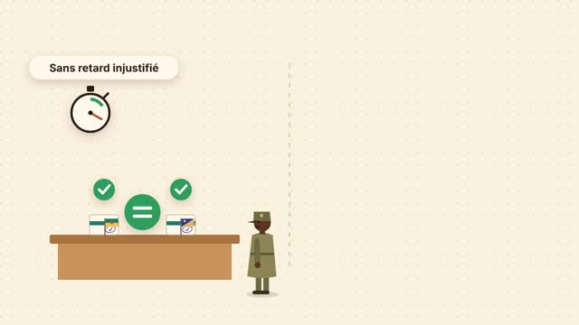 |
Diagram on a cream board (#FBF1DF) with a fine dot pattern, no logos. The frame is split by a faint dashed line. Left half: a wooden inspection table at a border post with two white meat crates, one marked with each invented flag, and a border officer in khaki uniform and cap standing beside it. At 1 s a stopwatch appears top left, its hand ticking briefly, with a cream pill "No undue delay"; from 3.2 s a magnifying glass passes over both crates and a green check pops above each (6.4 s, 6.9 s); at 8.4 s a green equals sign between them and a green pill "Same treatment". Right half, from 14 s: a cork notice board on which three documents are pinned one by one, a cream pill "Measures published" above it, then a cream badge with a globe and "WTO" at the top right and an envelope flying to it from the board (18 s). From 21.6 s a teal counter with a round teal "i" sign above it and a teal pill "SPS enquiry point"; a buyer in a blue shirt walks up from the right, a speech bubble with "?" appears over him at 24.8 s and turns into a green check at 27 s. | 4:27.3 Les contrôles aussi ont des règles. Les inspections se font sans retard injustifié, 4:34.6 et les produits importés ne sont pas traités moins bien que les produits locaux. 4:41.0 Les règles doivent aussi être connues : chaque pays publie ses mesures et notifie leurs changements à l’OMC, 4:48.8 et tient un point d’information qui répond aux questions sur ces mesures. |
— |
| 19 | transportArrive 5.2s Version linéaire (WhatsApp) |
Outside the abattoir building (same design, left). In front of it a small wooden pallet; Aïcha walks out to it and three white meat crates (teal band, small oval stamp) pop onto the pallet one by one. To the right are parked an open yellow pickup and a refrigerated truck (white insulated box with a big teal snowflake, teal cab). | 4:57.3 La viande est prête à partir vers la ville. | — | |
| 20 | choice2 8s (pause) Version linéaire (WhatsApp) |
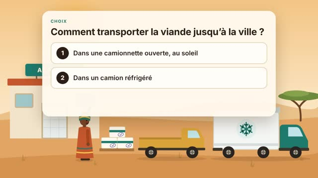 |
Carte de choix sur la scène figée ; la vidéo attend la réponse du spectateur. | 5:02.5 Comment transporter la viande jusqu’à la ville ? | Comment transporter la viande jusqu’à la ville ? 1. Dans une camionnette ouverte, au soleil 2. Dans un camion réfrigéré Interaction 1 → mauvaise réponse, blocked2 2 → bonne réponse, transportGo |
| 21 | blocked2 7.2s Version interactive seulement |
 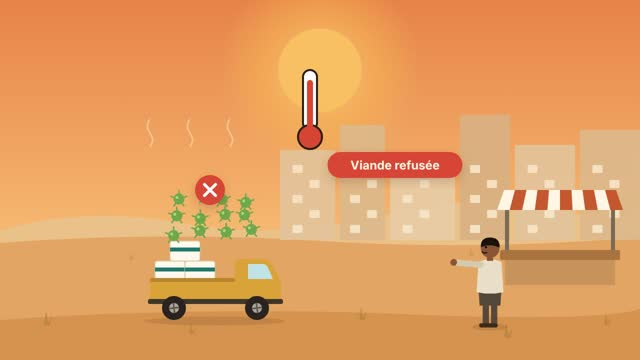 |
Branche : conséquence d’un mauvais choix, puis retour au choix. | +0.3s Sans froid, les microbes se multiplient. +3.6s À l’arrivée, la viande est refusée. |
— Interaction Branche : conséquence d’un mauvais choix, puis retour au choix. |
| 22 | transportGo 12.2s Version linéaire (WhatsApp) |
Continuing. From 0.3 s the three crates hop one by one into the back of the refrigerated truck; at 1.6 s a pale-teal pill with a snowflake appears above the truck: "Cold chain". From 2.2 s the truck drives off to the right, wheels turning, the pill following it. At 4.4 s crossfade to a city: a skyline of simple sand-coloured buildings with lit windows and a market stall with a striped awning on the right, where a buyer in a cream shirt waits facing left. The refrigerated truck drives in from the left and stops, the pill reappears above it. At 7 s a crate appears in front of the buyer, a magnifying glass sweeps over its stamp, a green check pops at 8.7 s, and at 9.3 s a green pill "Deal done" appears above the buyer, who waves. | 5:10.5 Dans un camion réfrigéré, la chaîne du froid n’est jamais rompue. 5:15.5 Des règles fondées sur les mêmes normes internationales facilitent le commerce entre pays. |
— | |
| 23 | infant 26s Version linéaire (WhatsApp) |
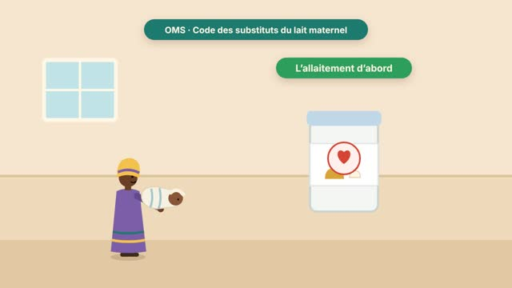 |
A calm room: warm cream wall, a window with pale blue panes, a light wooden floor. At 0.6 s a teal pill at the top: "WHO · Breast-milk Substitutes Code". On the left a mother in a purple wrapper dress and a yellow headwrap stands holding her baby, wrapped in a cream blanket, in her arms. At 9.2 s a billboard appears on the right showing a tin of infant formula and a megaphone; at 11.4 s a red cross stamps over it with a red pill "No advertising". At 13.4 s a gift box with a small tin on it appears near the mother; at 14.8 s a red cross over it and a red pill "No free samples". At 18 s both fade and a large formula tin appears on the right, its label carrying a red heart in a pale circle; at 20.2 s a green pill above it "Breastfeeding first" and at 21.2 s a green check. | 5:22.7 Un autre texte international protège les tout-petits : le Code international de commercialisation des substituts du lait maternel, de l’OMS. 5:31.8 Il protège l’allaitement : pas de publicité auprès du public pour ces produits, ni d’échantillons gratuits pour les mères. 5:40.8 Et leurs étiquettes doivent rappeler la supériorité de l’allaitement maternel. |
— |
| 24 | quiz 72s Version linéaire (WhatsApp) |
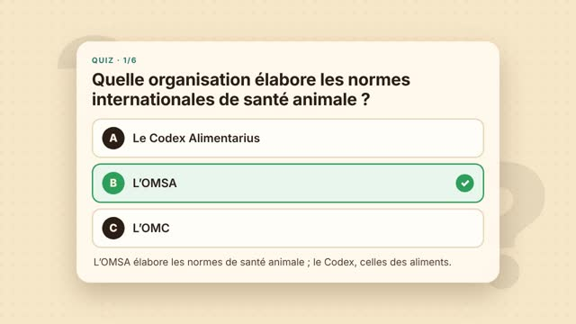 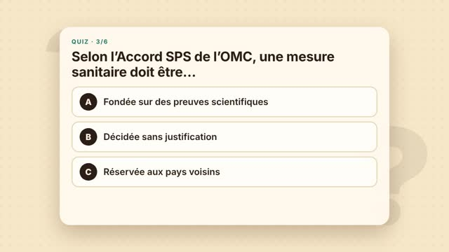 |
Warm cream background (#F7E7C9) with a dot pattern and two very large, faint, slowly rocking question marks. 6 questions, 12 s each. Each fades in as a centred cream card: teal label "Quiz · 1/6" and so on, the question in large bold text, and three option rows with dark lettered circles A, B, C. At 5.2 s into each question the correct option turns green with a white check, the others stay, and a one-line explanation appears under the options. Each card fades out in its last 0.3 s. | Quelle organisation élabore les normes internationales de santé animale ? … L’OMSA élabore les normes de santé animale ; le Codex, celles des aliments. Pourquoi respecter le délai d’attente après un traitement ? … Pendant ce délai, l’organisme élimine le médicament. Selon l’Accord SPS de l’OMC, une mesure sanitaire doit être… … Elle doit reposer sur la science et ne pas restreindre le commerce plus que nécessaire. Quand l’importateur doit-il accepter des mesures différentes ? … C’est l’équivalence (article 4) : des méthodes différentes, la même protection. Une maladie dans une région : que permet l’article 6 ? … Les mesures s’adaptent à chaque zone, si le pays prouve qu’elle est indemne. Où se renseigner sur les mesures SPS d’un pays ? … Chaque membre de l’OMC a un point d’information qui répond aux questions. |
1. Quelle organisation élabore les normes internationales de santé animale ? A. Le Codex Alimentarius · B. L’OMSA · C. L’OMC 2. Pourquoi respecter le délai d’attente après un traitement ? A. Pour éviter des résidus de médicaments dans la viande · B. Pour que l’animal grossisse · C. Pour payer moins de taxes 3. Selon l’Accord SPS de l’OMC, une mesure sanitaire doit être… A. Fondée sur des preuves scientifiques · B. Décidée sans justification · C. Réservée aux pays voisins 4. Quand l’importateur doit-il accepter des mesures différentes ? A. Jamais · B. Si elles atteignent son niveau de protection · C. Seulement si elles sont identiques 5. Une maladie dans une région : que permet l’article 6 ? A. Continuer à vendre depuis les zones indemnes · B. Cacher le foyer · C. Fermer toutes les frontières 6. Où se renseigner sur les mesures SPS d’un pays ? A. À son point d’information SPS · B. Nulle part : elles sont secrètes · C. Seulement à la frontière Interaction 6 questions. Interactive : le spectateur répond, voit la correction et son score. Linéaire : la bonne réponse s’affiche après quelques secondes. |
| 25 | rules 10s Version linéaire (WhatsApp) |
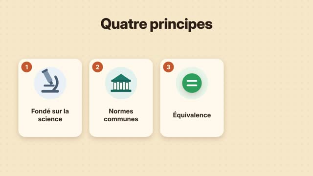 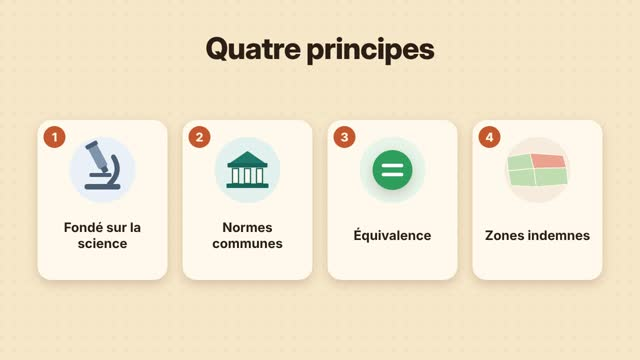 |
Warm cream background (#F7E7C9) with a dot pattern. The title "Four principles" fades in at the top. Four cream cards with soft shadows pop up in sequence (0.6 s, 1.4 s, 2.2 s, 3.0 s), each with a terracotta number badge (1 to 4), a pastel circle with an icon and a bold label: 1 a microscope "Based on science"; 2 a small teal temple "Common standards"; 3 a green equals sign "Equivalence"; 4 a tiny map with one red and three green regions "Disease-free zones". | 7:00.7 Quatre principes à retenir : la science, des normes communes, l’équivalence et les zones indemnes. | — |
| 26 | recap 9s Version linéaire (WhatsApp) |
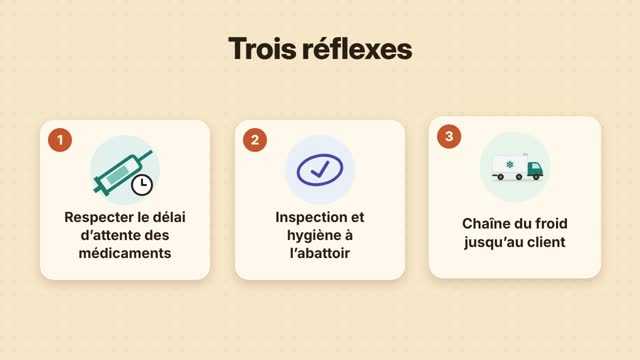 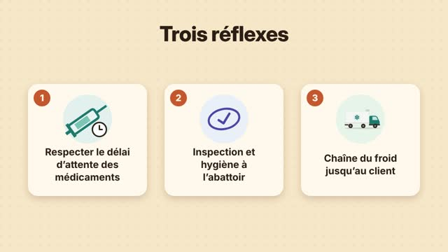 |
Same cream background. The title "Three habits" fades in at the top. Three cream cards with soft shadows pop up in sequence (0.6 s, 1.5 s, 2.4 s), each with a terracotta number badge (1, 2, 3), a pastel circle with an icon and a bold two- or three-line text: 1 a teal syringe with a small clock, "Respect medicine withdrawal periods"; 2 a blue-violet oval inspection stamp with a check, "Inspection and hygiene at the abattoir"; 3 a small refrigerated truck with a snowflake, "Cold chain all the way to the buyer". | 7:10.7 Des normes communes pour une viande saine et des marchés ouverts. | — |
| 27 | end 5s Version linéaire (WhatsApp) |
 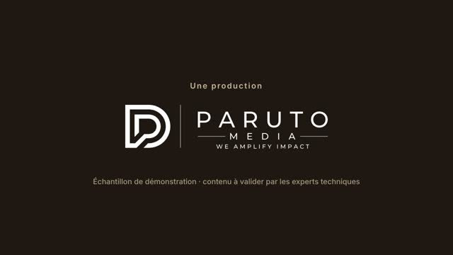 |
Dark brown background (#1E1712). Fade in, centred: small letter-spaced "Produced by" in muted beige, the Paruto Media logo in white below it (use the uploaded paruto-media-logo-white.svg; if no file is uploaded, set "PARUTO MEDIA" in white, wide letter-spacing), then a small grey line: "Demonstration sample · content to be validated by technical experts". | — | — |
Storyboard · Aïcha’s Market
Aïcha’s Market
Every shot of the module, interactive branches included: frames taken from the animation, visual direction, narration, on-screen text and interactions. Deliverable 1, to be validated with ARAA’s experts.
Branching map
| Shot | Segment | Frames | Visual direction | Narration and captions | On-screen text |
|---|---|---|---|---|---|
| 1 | title 7s Linear version (WhatsApp) |
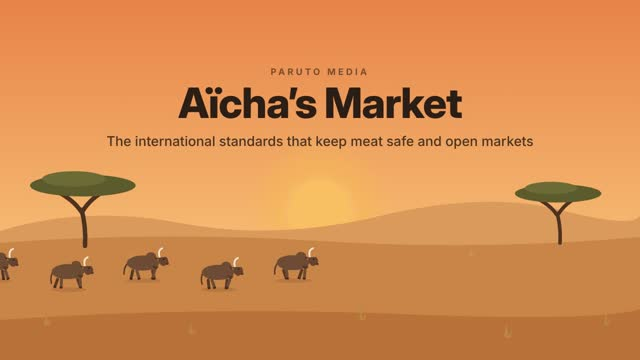 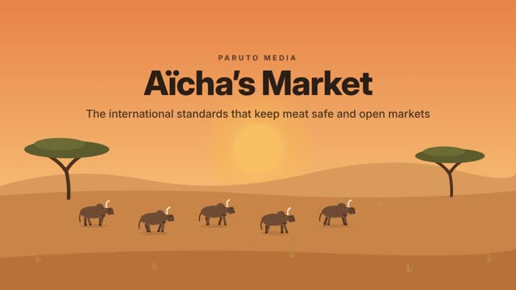 |
Dawn over the Sahel: sky gradient from #E7834A at the top to #F9D59C at the horizon, a large soft sun rising slowly, two flat acacia trees in dark olive silhouette, and five small dark-brown zebu cattle walking left to right along the horizon in a slow loop. From 0.8 s the title fades and slides up into the upper third: a small letter-spaced kicker "PARUTO MEDIA", the title "Aïcha’s Market" (very large, extra bold, #2B1E16) and the subtitle "The international standards that keep meat safe and open markets" beneath it. | 0:01.2 Aïcha’s market: the international standards that keep meat safe. | — |
| 2 | meet 11.6s Linear version (WhatsApp) |
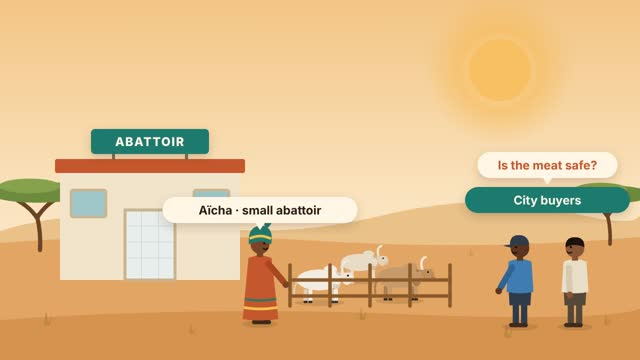 |
Daytime savanna: warm sky (#F2C584 to #FCEFD8), sand hills (#E9C189), ochre ground (#E2A564). On the left a small cream abattoir building with a terracotta roof, two windows, an open door showing white tiles, and a teal sign on the roof reading "ABATTOIR". Beside it a wooden pen with three zebu cattle. Aïcha walks out and stops right of the building: a West African woman in a long terracotta wrapper dress with yellow and teal bands and a teal headwrap. From 2.6 s two buyers in city clothes walk in from the right and stop facing her (one in a blue shirt and dark cap, one in a cream shirt). At 1.6 s a cream name tag pops above Aïcha: "Aïcha · small abattoir". At 5.8 s a teal pill above the buyers: "City buyers"; at 7.2 s a cream speech bubble above it in terracotta text: "Is the meat safe?". Everything gently idles. | 0:07.4 Aïcha runs a small abattoir. Buyers from a big coastal city want her meat. 0:13.9 But they ask for a guarantee: is this meat safe? |
— |
| 3 | why 24s Linear version (WhatsApp) |
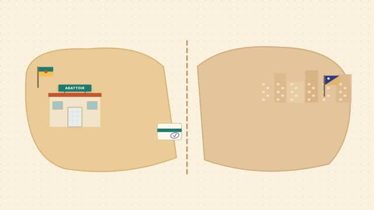 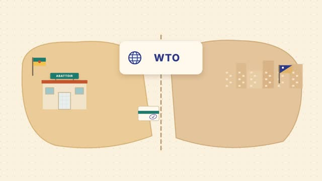 |
Diagram on a cream board (#FBF1DF) with a fine dot pattern, no logos. Two rounded sand-coloured countries side by side, split by a dashed vertical border in the middle. Two invented flags tell the countries apart: Aïcha's is teal over gold with a small terracotta disc; the buyers' is split diagonally indigo and sand with a small cream dot. Never use a real flag. The left country holds Aïcha's small abattoir (cream building, terracotta roof, teal sign "ABATTOIR") and its flag; the right one holds a small city skyline and its flag. From 1.2 s a white meat crate (teal band, oval stamp) slides from the abattoir to the border and stops. From 7.8 s four different rule cards pop in one by one around the border (white cards with coloured top bands: pale blue, tan, pale green, pink), each showing a big terracotta "?" or "!", and the crate jitters, stuck. At 15.6 s the cards fly together and vanish into one large cream card with a blue globe icon and "WTO" in bold indigo. From 18.6 s the crate slides across the border into the city; a green check pops at 21.8 s. | 0:18.9 The city is in a neighbouring country, which sets its own health rules for the meat it lets in. 0:26.2 If every country invented its own rules, every border would ask for something different. 0:33.6 That is why countries agreed on common principles, at the World Trade Organization. |
— |
| 4 | right 14s Linear version (WhatsApp) |
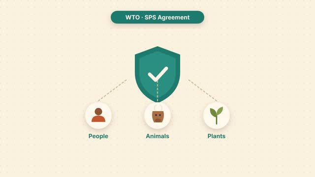 |
Diagram on a cream board (#FBF1DF) with a fine dot pattern, no logos. At 0.4 s a teal pill at the top: "WTO · SPS Agreement". At 1 s a large teal shield with a cream check mark grows in the centre. Three round cream badges pop in a row below it, joined to the shield by dotted lines, each with a teal label: at 6.2 s a person's bust "People", at 8.4 s a cow's head "Animals", at 10.6 s a green seedling "Plants". | 0:42.9 The WTO SPS Agreement starts with a right: 0:48.0 every country may protect the life and health of people, animals and plants. |
— |
| 5 | limits 26s Linear version (WhatsApp) |
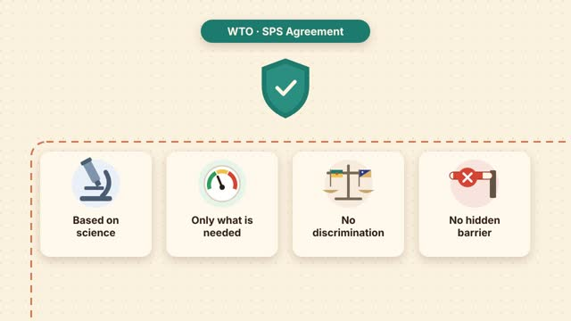 |
Continuing on the same board. The three badges fade and the shield shrinks and rises under the pill. A dashed terracotta rounded frame appears around the lower half of the frame (the limits). Four cream cards pop into it in a row, each with a pastel circle, an icon and a bold label: at 0.6 s a microscope "Based on science"; at 7.6 s a small gauge with its needle in the green "Only what is needed"; at 13.4 s a balance carrying both invented flags at the same height "No discrimination"; at 20 s a striped barrier crossed out with a red circle "No hidden barrier". | 0:56.9 But this right has limits. A measure must rest on scientific principles and evidence. 1:04.0 It applies only as far as needed to protect health. 1:09.8 It must not discriminate between countries where the same conditions prevail. 1:16.4 And it must never be a hidden barrier to trade. |
— |
| 6 | risk 24s Linear version (WhatsApp) |
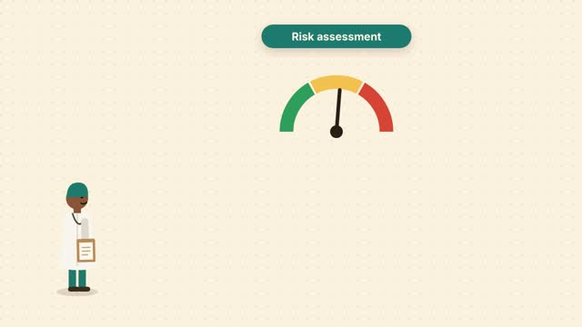 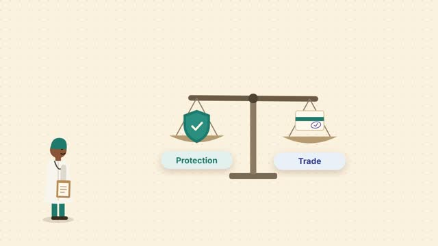 |
Diagram on a cream board (#FBF1DF) with a fine dot pattern, no logos. On the left the official veterinarian (white coat, teal cap, stethoscope, clipboard) stands and watches. At 0.5 s a teal pill "Risk assessment" appears at the top, and below it a large semicircular gauge (green, yellow, red) whose needle swings back and forth, then settles in the green at about 9 s. At 8.2 s, 10.6 s and 13 s three cream cards pop in a row, each with a pastel circle, an icon and a label: a microscope "Scientific evidence"; a cow beside a small farm building "Farming and processing"; a red virus "Diseases present". A magnifying glass moves over each card in turn. At 15.4 s the gauge and cards fade and a large brown balance scale appears: on the left pan a small teal shield with a pill "Protection", on the right pan a meat crate with a pill "Trade". The beam tips one way, then the other, and comes level at about 19.6 s; a green check pops above it at 20.4 s. | 1:22.9 To choose a measure, a country first assesses the risk, using methods from the international organisations. 1:30.4 It weighs the scientific evidence, how animals are raised and processed, and which diseases are present. 1:38.2 Then it picks a measure that protects enough, without restricting trade more than required. |
— |
| 7 | standards 17.6s Linear version (WhatsApp) |
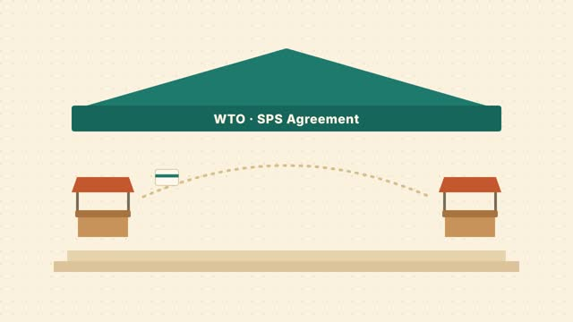 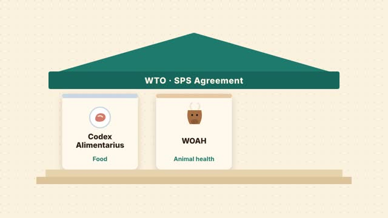 |
Diagram on a cream board (#FBF1DF) with a fine dot pattern, no logos. At 0.4 s a teal temple roof (pediment and architrave, #1F7A6E) pops in with "WTO · SPS Agreement" in white on the architrave, and a stone base appears below. Under the roof, two small market stalls (terracotta awnings) with a dashed arc between them and a small cream crate travelling along it, looping, until 8.4 s when they fade. Then three cream pillars rise under the roof, one by one at 9.4 s, 11.9 s and 14.2 s, each with a coloured top band, a round icon, a bold name and a teal subtitle: "Codex Alimentarius" with a plate of meat, "Food"; "WOAH" with a cow's head, "Animal health"; "IPPC" with a green leafy seedling, "Plants". | 1:46.9 To bring rules closer, the Agreement asks countries to base their measures on international standards. 1:54.0 Three bodies write them: the Codex Alimentarius for food, WOAH for animal health and the IPPC for plants. |
— |
| 8 | harmonize 18s Linear version (WhatsApp) |
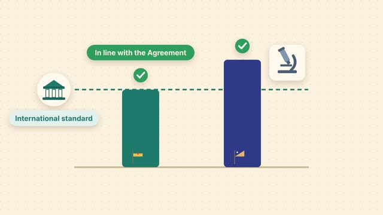 |
Diagram on a cream board (#FBF1DF) with a fine dot pattern, no logos. A light baseline across the lower frame and a dashed teal horizontal line at mid height: the international standard, marked on the left by a round badge with a small teal temple (pediment, three columns) and a pale-teal pill "International standard" under it. From 0.9 s a teal bar topped by Aïcha's flag at its foot grows up to exactly the dashed line; a green check pops above it at 3 s and a green pill "In line with the Agreement" at 3.8 s. From 8.8 s an indigo bar with the buyers' flag grows higher than the line; a yellow "?" pops above it at 11.2 s. At 12.4 s a cream card with a microscope flies in from the right and settles beside it; at 14 s the "?" becomes a green check and an indigo pill appears at the top: "Stricter: backed by science". | 2:04.5 A measure that follows these standards is presumed necessary and consistent with the Agreement. 2:12.6 A country may protect more strictly than the standard, but it needs a scientific justification. |
— |
| 9 | choice1 11s (pause) Linear version (WhatsApp) |
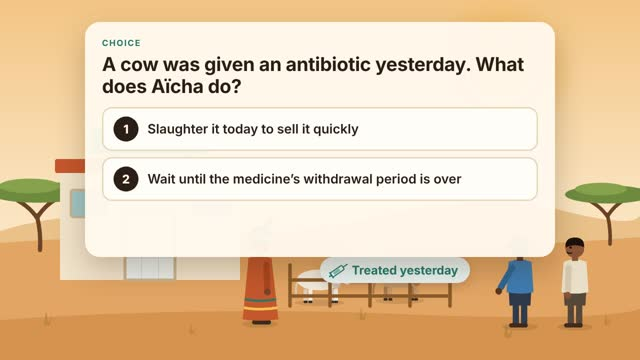 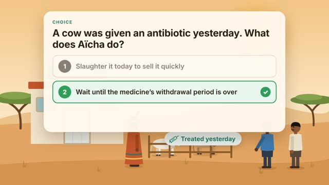 |
Aïcha's abattoir scene again, idle, with the buyers standing on the right. A pale-teal pill with a syringe icon sits over the cattle in the pen: "Treated yesterday". A large cream card (rounded corners, soft shadow) slides down into the upper part of the frame. Small teal uppercase label "Choice", the question in large bold text, then two option rows with numbered dark circles 1 and 2 (texts below). From 1.4 s to 4.4 s show the line "Pause the video and choose: 1 or 2?" with a 3, 2, 1 countdown in an orange ring. At 4.6 s option 2 turns green with a white check mark in a green circle; option 1 dims to half opacity. | 2:22.5 A cow was given an antibiotic yesterday. What does Aïcha do? 2:27.0 Answer 2: respect the withdrawal period to avoid residues in the meat. |
A cow was given an antibiotic yesterday. What does Aïcha do? 1. Slaughter it today to sell it quickly 2. Wait until the medicine’s withdrawal period is over Interaction 1 → wrong, blocked1 2 → correct, hygiene |
| 10 | blocked1 10s Interactive version only |
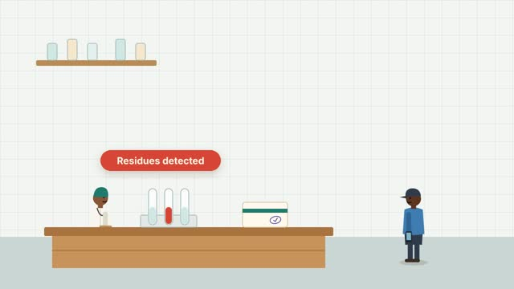 |
Branch: the consequence of a wrong choice, then back to the choice. | +0.3s The meat still contains residues of the medicine. +4.2s The check detects them: the batch is refused and the buyer cancels the order. |
— Interaction Branch: the consequence of a wrong choice, then back to the choice. |
| 11 | hygiene 16.8s Linear version (WhatsApp) |
Inside the abattoir: walls of small white tiles, a pale grey-green floor. On the left a metal-railed pen with two zebu cattle; on the right a steel rail near the ceiling with three stylised carcasses hanging from hooks (simple rounded shapes in muted pink with cream fat edges and a few rib lines; clean and not gory). The official veterinarian (white coat, teal cap, stethoscope, clipboard) stands by the pen facing the cattle, arm raised as if examining; green check marks pop above each animal at 1.6 s and 2.9 s. From 4.8 s he walks to the carcasses and, at 6.4 s, 8.0 s and 9.6 s, raises his arm and a blue-violet oval inspection stamp with a check slams onto each carcass. At 9.9 s a pale-violet pill appears at the top: "Inspected". From 11 s: a cream pill "Clean premises" with small white sparkles twinkling on the floor; at 12.2 s a wall tap drips water and a pill "Clean water" appears; at 13 s a worker in a white apron, white cap and white boots appears with a pill "Work clothes". | 2:33.5 Before slaughter, the veterinarian inspects the live animals. 2:38.0 After slaughter, he inspects each carcass and applies the inspection stamp. 2:43.8 Clean premises, clean water, work clothes: hygiene protects the consumer. |
— | |
| 12 | equiv 24s Linear version (WhatsApp) |
Diagram on a cream board (#FBF1DF) with a fine dot pattern, no logos. Two invented flags tell the countries apart: Aïcha's is teal over gold with a small terracotta disc; the buyers' is split diagonally indigo and sand with a small cream dot. Never use a real flag. Two large cream panels side by side, each with its flag in the top-left corner and a label at the bottom. Left panel (Aïcha's country): a hanging carcass, stylised and not gory; at 2.6 s a blue-violet oval inspection stamp with a check slams onto it; label "Inspection and stamp". Right panel (the buyers' country): a rack of three test tubes that fill with teal liquid from 3.6 s, then a green check; label "Laboratory tests". At 5.4 s a cream circle with a terracotta not-equal sign (≠) pops between the panels. At 7 s a dashed teal line with a small shield appears across the top, with a pale-teal pill "Same level of protection"; at 8.4 s and 9.2 s a short teal arrow grows from the top of each panel up to the line. At 15.6 s the ≠ turns into a green circle with a white equals sign, and at 16.6 s a green pill "Equivalent" appears below the panels. | 2:50.3 The buyers’ country does not check meat exactly the way Aïcha’s country does. 2:56.8 Under Article 4, the importer must accept different measures as equivalent, 3:04.4 if the exporting country objectively shows that they reach the importer’s level of protection. |
— | |
| 13 | equiv2 24s Linear version (WhatsApp) |
Continuing with both panels. From 0.6 s three white documents arc one after another from the left panel to the right one. From 4 s a magnifying glass travels from the right panel to the left one and hovers over the stamped carcass; a green check pops at 6.6 s. At 8.2 s a cream speech bubble with a terracotta "?" appears over the left panel; at 11.4 s a calendar showing "6" appears at the top right with a cream pill "Reply within 6 months". At 15.4 s these fade, the green pill below the panels fades, and a dashed road appears along the bottom; from 16 s a small refrigerated truck (white box with a teal snowflake, teal cab) drives steadily from left to right along it with a green pill "Trade goes on" riding above it. | 3:14.3 The exporter supplies the scientific and technical data, and gives access for inspections and tests. 3:22.0 On request, the importer explains the risk its measure targets, and normally replies within six months. 3:29.8 Meanwhile, trade already under way goes on: a request is no reason to stop it. |
— | |
| 14 | zones 18s Linear version (WhatsApp) |
Diagram on a cream board (#FBF1DF) with a fine dot pattern, no logos. Two invented flags tell the countries apart: Aïcha's is teal over gold with a small terracotta disc; the buyers' is split diagonally indigo and sand with a small cream dot. Never use a real flag. A simple invented map: Aïcha's country divided into four sand-coloured regions by thin cream borders, with a small zebu in three of them, her abattoir and flag in the bottom-left region; on the right, separated by a border barrier (a striped pole, raised), the buyers' country with a small city skyline and its flag. At 2.6 s a red virus pops in the top-right region, which turns salmon red, and a red pill appears at the top: "Foot-and-mouth disease". From 8.6 s a red dashed outline pulses around the whole country and a cream speech bubble with a terracotta "?" pops over the buyers' country, both gone by 12.4 s. From 12.6 s each region's outline flashes teal in turn. | 3:38.3 One morning, foot-and-mouth disease is reported in a region far from Aïcha’s. 3:46.0 Must the whole country stop selling? Article 6 says measures must fit the health situation of each area. |
— | |
| 15 | choice3 11s (pause) Linear version (WhatsApp) |
The map as at the end of the previous shot, still (the outbreak region red). A large cream card (rounded corners, soft shadow) slides down into the upper part of the frame. Small teal uppercase label "Choice", the question in large bold text, then two option rows with numbered dark circles 1 and 2 (texts below). From 1.4 s to 4.4 s show the line "Pause the video and choose: 1 or 2?" with a 3, 2, 1 countdown in an orange ring. At 4.6 s option 2 turns green with a white check mark in a green circle; option 1 dims to half opacity. | 3:56.3 What should Aïcha’s country do? 4:00.8 Answer 2: report the outbreak, control the zone and prove the other areas are free. |
Foot-and-mouth disease in a far-off region. What should Aïcha’s country do? 1. Say nothing, to keep selling 2. Report it, control the zone, prove the rest is disease-free Interaction 1 → wrong, blocked3 2 → correct, zonesGo |
|
| 16 | blocked3 10s Interactive version only |
Branch: the consequence of a wrong choice, then back to the choice. | +0.3s Kept quiet, the disease spreads to other regions. +4.6s Trust is lost: buyers close their doors to the whole country. |
— Interaction Branch: the consequence of a wrong choice, then back to the choice. |
|
| 17 | zonesGo 20s Linear version (WhatsApp) |
The same map. At 0.2 s a cream badge with a cow's head and "WOAH" appears at the top right, and an envelope flies to it from the red region. At 2.4 s a dashed teal circle closes around the red region and a teal pill replaces the red one at the top: "Zone under control". From 6.8 s a magnifying glass sweeps over the three other regions; each turns pale green with a green check (7.8 s, 9.1 s, 10.4 s), and a green pill "Disease-free" appears at the top left at 11 s. From 13.6 s a small refrigerated truck leaves the abattoir region and drives towards the border, which stays open; a green check pops over the buyers' country at 18.4 s. | 4:07.3 The outbreak is reported to WOAH and the zone is put under control. 4:14.0 With surveillance and checks, the country proves the other areas are free of the disease, 4:20.6 and buyers can keep accepting meat from those areas. |
— | |
| 18 | checks 30s Linear version (WhatsApp) |
Diagram on a cream board (#FBF1DF) with a fine dot pattern, no logos. The frame is split by a faint dashed line. Left half: a wooden inspection table at a border post with two white meat crates, one marked with each invented flag, and a border officer in khaki uniform and cap standing beside it. At 1 s a stopwatch appears top left, its hand ticking briefly, with a cream pill "No undue delay"; from 3.2 s a magnifying glass passes over both crates and a green check pops above each (6.4 s, 6.9 s); at 8.4 s a green equals sign between them and a green pill "Same treatment". Right half, from 14 s: a cork notice board on which three documents are pinned one by one, a cream pill "Measures published" above it, then a cream badge with a globe and "WTO" at the top right and an envelope flying to it from the board (18 s). From 21.6 s a teal counter with a round teal "i" sign above it and a teal pill "SPS enquiry point"; a buyer in a blue shirt walks up from the right, a speech bubble with "?" appears over him at 24.8 s and turns into a green check at 27 s. | 4:27.3 Checks have rules too. Inspections must be carried out without undue delay, 4:34.6 and imported products are treated no less favourably than local ones. 4:41.0 Rules must also be known: each country publishes its measures and notifies changes to the WTO, 4:48.8 and runs an enquiry point that answers questions about them. |
— | |
| 19 | transportArrive 5.2s Linear version (WhatsApp) |
Outside the abattoir building (same design, left). In front of it a small wooden pallet; Aïcha walks out to it and three white meat crates (teal band, small oval stamp) pop onto the pallet one by one. To the right are parked an open yellow pickup and a refrigerated truck (white insulated box with a big teal snowflake, teal cab). | 4:57.3 The meat is ready to leave for the city. | — | |
| 20 | choice2 8s (pause) Linear version (WhatsApp) |
Choice card over the frozen scene; the video waits for the viewer’s answer. | 5:02.5 How should the meat travel to the city? | How should the meat travel to the city? 1. In an open pickup, in the sun 2. In a refrigerated truck Interaction 1 → wrong, blocked2 2 → correct, transportGo |
|
| 21 | blocked2 7.2s Interactive version only |
Branch: the consequence of a wrong choice, then back to the choice. | +0.3s Without cold, microbes multiply. +3.6s On arrival, the meat is refused. |
— Interaction Branch: the consequence of a wrong choice, then back to the choice. |
|
| 22 | transportGo 12.2s Linear version (WhatsApp) |
Continuing. From 0.3 s the three crates hop one by one into the back of the refrigerated truck; at 1.6 s a pale-teal pill with a snowflake appears above the truck: "Cold chain". From 2.2 s the truck drives off to the right, wheels turning, the pill following it. At 4.4 s crossfade to a city: a skyline of simple sand-coloured buildings with lit windows and a market stall with a striped awning on the right, where a buyer in a cream shirt waits facing left. The refrigerated truck drives in from the left and stops, the pill reappears above it. At 7 s a crate appears in front of the buyer, a magnifying glass sweeps over its stamp, a green check pops at 8.7 s, and at 9.3 s a green pill "Deal done" appears above the buyer, who waves. | 5:10.5 In a refrigerated truck, the cold chain is never broken. 5:15.5 Rules based on the same international standards make trade between countries easier. |
— | |
| 23 | infant 26s Linear version (WhatsApp) |
A calm room: warm cream wall, a window with pale blue panes, a light wooden floor. At 0.6 s a teal pill at the top: "WHO · Breast-milk Substitutes Code". On the left a mother in a purple wrapper dress and a yellow headwrap stands holding her baby, wrapped in a cream blanket, in her arms. At 9.2 s a billboard appears on the right showing a tin of infant formula and a megaphone; at 11.4 s a red cross stamps over it with a red pill "No advertising". At 13.4 s a gift box with a small tin on it appears near the mother; at 14.8 s a red cross over it and a red pill "No free samples". At 18 s both fade and a large formula tin appears on the right, its label carrying a red heart in a pale circle; at 20.2 s a green pill above it "Breastfeeding first" and at 21.2 s a green check. | 5:22.7 Another international text protects the youngest: the WHO International Code of Marketing of Breast-milk Substitutes. 5:31.8 It protects breastfeeding: these products should not be advertised to the public, and mothers should not get free samples. 5:40.8 And their labels should state that breastfeeding is best. |
— | |
| 24 | quiz 72s Linear version (WhatsApp) |
Warm cream background (#F7E7C9) with a dot pattern and two very large, faint, slowly rocking question marks. 6 questions, 12 s each. Each fades in as a centred cream card: teal label "Quiz · 1/6" and so on, the question in large bold text, and three option rows with dark lettered circles A, B, C. At 5.2 s into each question the correct option turns green with a white check, the others stay, and a one-line explanation appears under the options. Each card fades out in its last 0.3 s. | Which organisation develops international animal health standards? … WOAH develops animal health standards; the Codex develops food standards. Why respect the withdrawal period after a treatment? … During this period, the body eliminates the medicine. Under the WTO SPS Agreement, a health measure must be… … It must rest on science and not restrict trade more than necessary. When must an importer accept different measures? … That is equivalence (Article 4): different methods, the same protection. Disease in one region: what does Article 6 allow? … Measures fit each area, if the country proves it is disease-free. Where can you ask about a country’s SPS measures? … Every WTO member has an enquiry point that answers questions. |
1. Which organisation develops international animal health standards? A. The Codex Alimentarius · B. WOAH · C. The WTO 2. Why respect the withdrawal period after a treatment? A. To avoid medicine residues in the meat · B. So the animal puts on weight · C. To pay less tax 3. Under the WTO SPS Agreement, a health measure must be… A. Based on scientific evidence · B. Decided without justification · C. Reserved for neighbouring countries 4. When must an importer accept different measures? A. Never · B. If they reach its level of protection · C. Only if they are identical 5. Disease in one region: what does Article 6 allow? A. Selling on from disease-free areas · B. Hiding the outbreak · C. Closing every border 6. Where can you ask about a country’s SPS measures? A. At its SPS enquiry point · B. Nowhere: they are secret · C. Only at the border Interaction 6 questions. Interactive: the viewer answers, sees the correction and a score. Linear: the right answer is revealed after a few seconds. |
|
| 25 | rules 10s Linear version (WhatsApp) |
Warm cream background (#F7E7C9) with a dot pattern. The title "Four principles" fades in at the top. Four cream cards with soft shadows pop up in sequence (0.6 s, 1.4 s, 2.2 s, 3.0 s), each with a terracotta number badge (1 to 4), a pastel circle with an icon and a bold label: 1 a microscope "Based on science"; 2 a small teal temple "Common standards"; 3 a green equals sign "Equivalence"; 4 a tiny map with one red and three green regions "Disease-free zones". | 7:00.7 Four principles to remember: science, common standards, equivalence and disease-free zones. | — | |
| 26 | recap 9s Linear version (WhatsApp) |
Same cream background. The title "Three habits" fades in at the top. Three cream cards with soft shadows pop up in sequence (0.6 s, 1.5 s, 2.4 s), each with a terracotta number badge (1, 2, 3), a pastel circle with an icon and a bold two- or three-line text: 1 a teal syringe with a small clock, "Respect medicine withdrawal periods"; 2 a blue-violet oval inspection stamp with a check, "Inspection and hygiene at the abattoir"; 3 a small refrigerated truck with a snowflake, "Cold chain all the way to the buyer". | 7:10.7 Shared standards for safe meat and open markets. | — | |
| 27 | end 5s Linear version (WhatsApp) |
  |
Dark brown background (#1E1712). Fade in, centred: small letter-spaced "Produced by" in muted beige, the Paruto Media logo in white below it (use the uploaded paruto-media-logo-white.svg; if no file is uploaded, set "PARUTO MEDIA" in white, wide letter-spacing), then a small grey line: "Demonstration sample · content to be validated by technical experts". | — | — |